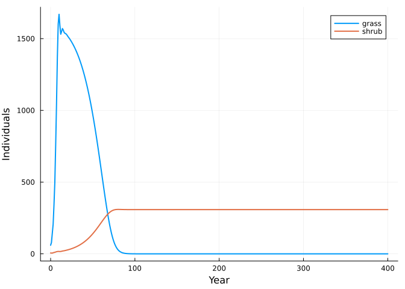
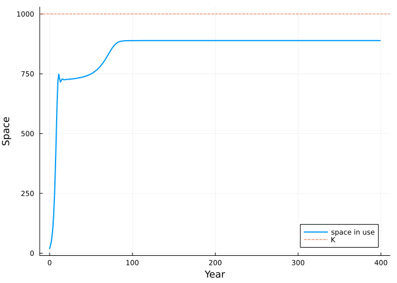
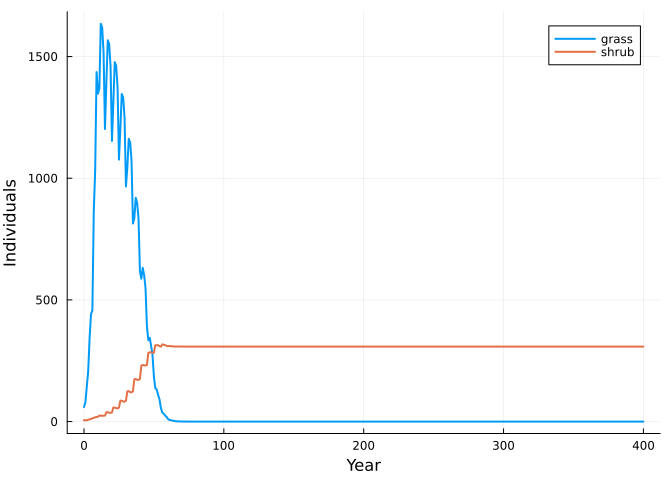

Matrix community models by composition
Simon Frost
- What a matrix community model is
- Two species sharing space
- Projection
- Every number is traceable
- Composition is explicit and nests
- Environments
- Reference
ENV["GKSwstype"] = "100"
using MatrixCommunityModels
using MatrixProjectionModels: lambda
using Catlab: @relation
using PlotsWhat a matrix community model is
A matrix community model (MCM; Lytle & Tonkin 2023) is a set of single-species matrix population models linked by one assumption: some quantity, such as space or total biomass, is shared, and every species’ vital rates respond to how much of it is in use. Pairwise interactions between species are not written down. They emerge from the sharing.
This package builds MCMs in three steps that mirror that description:
- declare each species as a list of named transitions between stages;
- say how much of each shared pool each stage occupies;
- compose the species. A pool’s total is the sum of what every attached species occupies, and each species sees only that total.
Two species sharing space
A grass and a shrub compete for 1000 units of space. Seed production of both falls linearly to zero as the space fills. A response is a function of a context ctx holding the species’ own stages (ctx.n), the pool totals (ctx.pool) and the environment of the current step (ctx.env); it scales the transition it is attached to.
K = 1000.0
crowding(ctx) = max(0.0, 1 - ctx.pool.space / K)
# each life cycle is a net of named transitions (CategoricalPopulationDynamics.jl)
grass_life = ValuedProjectionNet([:seedling, :adult],
:establishing => [(:seedling => :adult) => 0.30],
:persisting => [(:adult => :adult) => 0.50],
:seeding => [(:adult => :seedling) => 6.0])
shrub_life = ValuedProjectionNet([:seedling, :juvenile, :adult],
:establishing => [(:seedling => :juvenile) => 0.30],
:maturing => [(:juvenile => :adult) => 0.50],
:persisting => [(:adult => :adult) => 0.95],
:seeding => [(:adult => :seedling) => 3.0])
# a response says how a named transition depends on the pool; `births` marks reproduction
plant(life) = births(respond(life, :seeding => crowding), :seeding)
grass = species(:grass, plant(grass_life); occupies = [:space => [:seedling => 0.1, :adult => 1.0]])
shrub = species(:shrub, plant(shrub_life); occupies = [:space => [:seedling => 0.1, :juvenile => 1.0, :adult => 4.0]])
com = community(grass, shrub)OpenCommunity(grass, shrub; pools = space)community joins species by pool name. The result is a PooledProjectionSystem from CategoricalPopulationDynamics.jl (see system(com)), with the wiring diagram it was built from: one box per species, one junction per pool. Projecting it lowers it to a CoupledMPMProblem and calls the solver of MatrixProjectionModels.jl.
species_names(com), pool_names(com)([:grass, :shrub], [:space])diagram(com)Catlab.WiringDiagrams.RelationDiagrams.UntypedUnnamedRelationDiagram{Symbol, Symbol} {Box:2, Port:2, OuterPort:1, Junction:1, Name:0, VarName:0}
| Box | name |
|---|---|
| 1 | grass |
| 2 | shrub |
| Port | box | junction |
|---|---|---|
| 1 | 1 | 1 |
| 2 | 2 | 1 |
| OuterPort | outer_junction |
|---|---|
| 1 | 1 |
| Junction | variable |
|---|---|
| 1 | space |
Projection
There is no environmental variation here, so the environment of each step is nothing.
sol = project(com, [:grass => [50.0, 10.0], :shrub => [5.0, 0.0, 1.0]], fill(nothing, 400))
plot(sol.t, [sum(sol[:grass]; dims = 2) sum(sol[:shrub]; dims = 2)];
label = ["grass" "shrub"], xlabel = "Year", ylabel = "Individuals", lw = 2)
The grass fills the space quickly; the slower shrub then displaces it. Nothing in the model says “shrub outcompetes grass”. The outcome follows from the vital rates: the grass replaces itself only while less than 72% of the space is in use, the shrub up to 89%, so the shrub keeps growing after the grass has stopped. The pool total used at each step is kept alongside the trajectory, and settles at that 89%:
plot(sol.t[1:end-1], sol.pools[1:end-1, 1]; label = "space in use", xlabel = "Year",
ylabel = "Space", lw = 2)
hline!([K]; label = "K", ls = :dash)
Every number is traceable
At any state the model is an ordinary projection matrix. matrix_model freezes one species at a community state and returns a MatrixProjectionModel from MatrixProjectionModels.jl, with survival and fecundity kept apart, so all the single-species tools apply. (frozen_net returns the same thing as a net.)
empty = [0.0, 0.0] # nobody there: all the space is free
full = [0.0, 900.0] # 900 of the 1000 units of space in use
matrix_model(grass, :grass, empty, nothing).A, matrix_model(grass, :grass, full, nothing).A([0.0 6.0; 0.3 0.5], [0.0 0.5999999999999999; 0.3 0.5])lambda(matrix_model(grass, :grass, empty, nothing)), lambda(matrix_model(grass, :grass, full, nothing))(1.614734406395618, 0.7424428900898051)The whole community frozen at a state is block diagonal, one block per species:
n = sol.u[end, :]
A = community_matrix(com, n, nothing)5×5 Matrix{Float64}:
0.0 0.666667 0.0 0.0 0.0
0.3 0.5 0.0 0.0 0.0
0.0 0.0 0.0 0.0 0.333333
0.0 0.0 0.3 0.0 0.0
0.0 0.0 0.0 0.5 0.95At the end of the run the frozen matrix nearly maps the state to itself, which is what an equilibrium of the nonlinear model looks like:
maximum(abs.(A * n .- n))7.725952286472193e-38Composition is explicit and nests
community is a convenience for the common case. The underlying operation is compose, which fills the boxes of an undirected wiring diagram. Writing the diagram by hand makes the dependency assumption a visible object:
d = @relation (space,) begin
grass(space)
shrub(space)
end
com2 = compose(d, [grass, shrub])
sol2 = project(com2, sol.u[1, :], fill(nothing, 400))
sol2.u == sol.utrueA composite is itself an open community, so it can be a box in a larger diagram. Here a third species joins the two-species community through the same pool. Because pool totals are sums, the result does not depend on how the species were grouped:
herb_life = ValuedProjectionNet([:plant], :persisting => [(:plant => :plant) => 0.2], :seeding => [(:plant => :plant) => 2.0])
herb = species(:herb, plant(herb_life); occupies = [:space => [:plant => 0.5]])
nested = compose((@relation (space,) begin
woody(space)
herb(space)
end), [com, herb])
flat = community(grass, shrub, herb)
n0 = [50.0, 10.0, 5.0, 0.0, 1.0, 20.0]
project(nested, n0, fill(nothing, 100)).u ≈ project(flat, n0, fill(nothing, 100)).utrueEnvironments
The environment is anything you like, one value per time step, handed to every rate. A drought that halves grass survival in some years:
drought(ctx) = ctx.env.drought ? 0.5 : 1.0
grass_d = species(:grass, respond(plant(grass_life), :establishing => drought, :persisting => drought);
occupies = [:space => [:seedling => 0.1, :adult => 1.0]])
envs = [(drought = t % 5 == 0,) for t in 1:400]
sold = project(community(grass_d, shrub), sol.u[1, :], envs)
plot(sold.t, [sum(sold[:grass]; dims = 2) sum(sold[:shrub]; dims = 2)];
label = ["grass" "shrub"], xlabel = "Year", ylabel = "Individuals", lw = 2)
The following vignettes rebuild published MCMs this way and check them against the original R code.
Reference
Lytle, D. A. & Tonkin, J. D. (2023). Matrix community models for ecology and evolution. npj Biodiversity 2, 26. https://doi.org/10.1038/s44185-023-00031-5